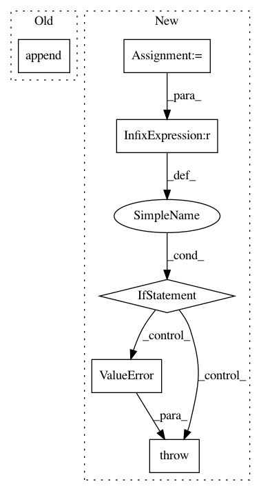

c2f59ba0593671c56da7830cf7e2a171a224d2e0,tfcoreml/_layers.py,,batchnorm,#,81
Before Change
param_list = []
for idx in range(1,5):
if compat.as_str_any(op.inputs[idx].name) in context.consts:
param_list.append(context.consts[compat.as_str_any(op.inputs[idx].name)])
else:
param_list.append(context.consts[compat.as_str_any(
op.inputs[idx].op.inputs[0].name)])
gamma, beta, mean, variance = param_list
After Change
elif op.type == "FusedBatchNorm":
param_list = []
for idx in range(1,5):
t = _get_const_tensor_value(context, op.inputs[idx].name, op.inputs[idx].op)
if t is None:
raise ValueError("Value not found for {}".format(op.inputs[idx].name))
param_list.append(t)
gamma, beta, mean, variance = param_list
is_training = op.get_attr("is_training")
if mean.shape == (0,) and variance.shape == (0,) and is_training:
In pattern: SUPERPATTERN
Frequency: 4
Non-data size: 6
Instances
Project Name: tf-coreml/tf-coreml
Commit Name: c2f59ba0593671c56da7830cf7e2a171a224d2e0
Time: 2019-09-03
Author: aseem.elec@gmail.com
File Name: tfcoreml/_layers.py
Class Name:
Method Name: batchnorm
Project Name: GPflow/GPflow
Commit Name: 0d97bc0bb3db40017f1278d6c1f292ea0f789ab0
Time: 2020-03-27
Author: art.art.v@gmail.com
File Name: gpflow/optimizers/mcmc.py
Class Name: SamplingHelper
Method Name: __init__
Project Name: havakv/pycox
Commit Name: bf6dd2acf16cb6d0e365060b6f9d82680177f189
Time: 2018-05-06
Author: havard@DN0a22c81b.SUNet
File Name: pycox/models/cox.py
Class Name: CoxPHLinear
Method Name: fit
Project Name: pgmpy/pgmpy
Commit Name: 48cde6681febf988ffcc6902160d885ec1827188
Time: 2014-11-02
Author: ankurankan@gmail.com
File Name: pgmpy/Inference/base.py
Class Name: Inference
Method Name: __init__